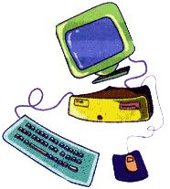

Technology
Just a few years ago, the choice of living in areas away from metropolitan centers meant virtual isolation from the health services and support groups that flourish in urban centers. Now, with the advancements and availability of the online world, health care services are simply a modem away.
The following is a list of the three major on-line service providers, American Online, CompuServe, and Prodigy, as well as an overview of the health care services they provide. We've also included some helpful hints to make it easier for you to navigate the often complicated world of the Internet. The listings continue on page 83.
The "Big Three"Computer Networks in a Nutshell
America Online
Active, friendly self-help forums. Most live chat and support groups. Great forum for seniors (SeniorNet). Most graphically attractive interface. Easiest to use, highly intuitive. Limited selection of medical database materials.
Compuserve
Active, friendly self help forums. Most extensive medical databases. Most medical professionals online. Most medical professionals as forum leaders. Most business-oriented. Most expensive premium services.
Prodigy
Active, friendly self-help forums. Great special membership rate for those with chronic illness. Great kids' resources. Great way to find information (Homework Helper). Chunky, childish graphics and interface. Annoying unrequested ads flashed on screen.
Member Registry
All the commercial services have a member registry where you can search the membership roster for characteristics, e.g., to see who else is from your home town, has fibromyalgia, or collects first editions of Dr. Seuss. Looking through the registry is a great way to find the people you'd like to connect with. On America Online, click on "Get a Member's Profile" in the Members menu. On CompuServe, use "Go dir" (for "directory"). On Prodigy, use the jumpword "member list."
AMERICA ONLINE America Online offers a very comprehensive list of health services. The following are health and health-related forums on AOL, as well as some of the different subtopics found under in each:
The Better Health & Medical Forum (Keyword: "Better Health")
Subtopics
HealthFocus Organizations & disABILITIES Message Center Health & Medical Chat Room Software Libraries Search Health Forum
The disABILITIESForum (Keyword: "dis")
Subtopics
About the Forum Employment & Empowerment Assistive Technology Forum DisABILITIES Message Center Software Libraries Online Chats Self-Help Schedule Equal Access Cafe Chat Room Go to Better Health and Medical Forum
Reference (Keyword: "Health Reference")
This site includes access to the following health related reference sources:
The Knowledge Center-The Better Health & Medical Forum's health database.
Reference Q &A-A chat room in which AOL staffers answer your questions and offer online advice on a wide variety of health concerns.
MEDLINE-The world's largest biomedical database.
AIDS Daily Summary -A variety of social, political, and scientific news stories relating to AIDS and HIV.
Personal Empowerment Network (Keyword; "PEN")
This new forum provides another topic-specific list of health resources. Click "Empower Me" to suggest a new message folder, to start a new support group, or to send a comment or suggestion to the forum hosts.
HeaIthZone (Keyword: "HeaIthZone")
HeaIthZone is a fitness and wellness center where members can find and share information on weight management, nutrition, exercise, sports medicine, and spiritual and mental well-being
The Positive Living Forum (Keywords: "AIDS," "HIV")
A forum devoted to AIDS and HIV support and information.
SeniorNet Online (Keyword: "Senior")
SeniorNet Online describes itself as "the international community of computer-using seniors." All interested AOL members over 55 are invited to join.
The Health Channel (Keyword: "Health")
A convenient and innovative directory of selected healthrelated chat groups, forums, databases, search services, magazines, news, etc.
PRODIGY Here are Prodigy's health service bulletin boards and the main topics covered in each:
Medical Support Bulletin Board (Jumpword: "medical support bb")
Main Topics
AIDS Alcohol Abuse Alzheimer's Arthritis Cancer Crohn's/Colitis Deafness/hearing Loss Depression/Anxiety/ OCD (obsessive compulsive disorder) Drug Abuse Eating Disorders Grief/Death Heart Disease Infertility Neurological Rare Diseases Respiratory Problems Vision Loss Weight Loss
Health Bulletin Board (Jumpword: "health bb")
Main Topics
Bodybuilding Dental Care Diet & Nutrition Emotional Issues Exercise Eye Care Family Medicine Foot Care Herbal Medicine Home Remedies Homeopathy Injuries/Healing Men's Health Pregnancy Prescription Drugs
Consumer Reports (Jumpword: "consumer reports")
Main Topics
Body Systems Drugs & Medicine Environment Food Safety Injury/Emergency Medical Treatments Pesticides Question of Health
Health News (Jumpword: "health news")
Lists news bulletins, health-related trends, and biomedical breakthroughs.
Prodigy Health Menu (Jumpword: "health topics")
A mixture of recent press releases and news stories on a variety of health topics.
Women's Health (Jumpword: "women's health")
Includes news articles on women's health, a list of women's health groups, and cross-references to other Prodigy health services.
Common Email Mistakes
Sending "private" E-mail containing personal information that ends up getting forwarded to the wrong person (like your boss!). Remember that your email can be easily forwarded to anyone on the net. Addressing private E-mail to a mailing list address and having it appear in hundreds or thousands of list member's mailboxes. This is a minor annoyance to other list members. On-line irony or sarcasm can be misunderstood. Sarcasm should be used sparingly, if at all, for it is rarely successful. In the on-line world, there's no body language or tone of voice to let people know you're not serious. Using ALL CAPITALS for long E-mail passages. A little emphasis goes a long way.
COMPUSERVE One of the oldest online service providers, CompuServe offers the following health and health-related forums:
THE HEALTH AND FITNESS FORUM ("Go Goodhealth")
Special-Interest Sections
General/Help Mental Health The Doctor's Inn Headache/Migraine Family Exercise Nutrition Women's Health Support Groups/Help Weight Loss/Control Opinion/Editorial
THE HOLISTIC HEALTH FORUM ("Go Holistic")
Special-Interest Sections:
Homeopathy and Bach Flower Remedies Foods, Diet & Water Holistic Medicine Herbs & Plants Chinese/Ayurvedic Birth & Child Care Exercise & Yoga Natural Products Women's Health Weight Control Holistic Dentistry Health Education Folk Remedies
THE CANCER FORUM ("Go Cancer")
Special-Interest Sections
General/Newcomers Breast Cancer Prostate/Testes Skin/Melanoma Misc. Cancers Insurance Issues Nutrition Issues Ranting and Raging The Coffee Shop Support Group Gynecologic Cancer Head/Neck/Lung New Research Health Care Politics Hot Topic!
THE RECOVERY FORUM ("Go Recovery")
Special-Interest Sections
Soberspace Cafe Friends and Families Drugs/ 12 Steps Alcoholism/ 12 Steps Eating/ 12 Steps Nicotine Addiction Relationships
THE ATTENTION DEFICIT DISORDER (ADD) FORUM ("Go ADD")
Special-Interest Sections
Newcomers: Hi & Help Elementary/Preteen Parenting Parenting Teens Adult ADD Is it ADD? Diagnosis Therapy/Medication Alternative Therapies Relationship Issues Work/Career issues Success/What Works Ask the Doctors Books/Media/Meetings Computer Chat/Query
Other notable health and health-related forums on CompuServe are:
The Diabetes Forum ("Go Diabetes") The Disabilities Forum ("Go Disabilities") The Seniors Forum ("Go Seniors") The Family Services Forum ("Go MYFAMILY")
The following are CompuServe's four health databases. They are arranged in order of complexity, with the easiest to use listed first.
HealthNet ("Go HNT") Consumer Reports Complete Drug Reference ("Go Drugs") Health Database Plus ("Go HLTDB") PaperChase ("Go PaperChase")
Adapted From Health Online (Addison Wesley, 1996) by Tom Furguson, M.D. Copyright © by Tom Furguson, M.D.
|
 |
|
|